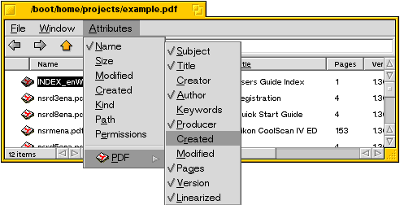

Attributi del Tracker
Attributi del Tracker
Dalla versione 0.9.3 di BePDF si presentano, per richiesta popolare: attributi del Tracker!
Visualizzare attributi PDF nel Tracker
Aprite una finestra del Tracker che contenga uno o più file PDF (la finestra può contenere tipi di file vari, anche).
Cambiate la visualizzazione della finestra del Tracker alla modalità 'List View'
Selezionate 'Attributes' del menù del Tracker
Scegliete PDF e selezionate dalla lista gli attributi a visualizzarsi
Se gli attributi PDF non sono disponibili nella 'List View' del Tracker
Uscite da BePDF, se è aperto attualmente
Aprite l'applicazione "FileTypes BeOS Preferences"
Scegliete e rimovete i tipi di file (filetypes) application/pdf e application/x-pdf
Riavviate il Tracker
Navigate a un file PDF e datene doppio clic
Nella finestra che si apre, scegliete "Find"
Selezionate BePDF nel dialogo "Open With" e scegliete "Make Preferred"
Ora in qualsiasi finestra del Tracker con un file PDF, nella finestra degli attributi si troverà un elenco di attributi validi d'attributi per visualizzare.
Editare gli attributi PDF
Semplicemente usate QuickRes [http://www.bebits.com/app/1504] o qualsiasi altro editore di attributi BeOS per cambiare gli attributi file PDF. Questi cambi non saranno salvati nel PDF. BePDF non sopprascriverà gli attributi editate almeno che si pulse la tasta comando (command) mentre si apre il file--gli attributi del file si ritornerano ai valori per difetto di PDF da quel tempo.